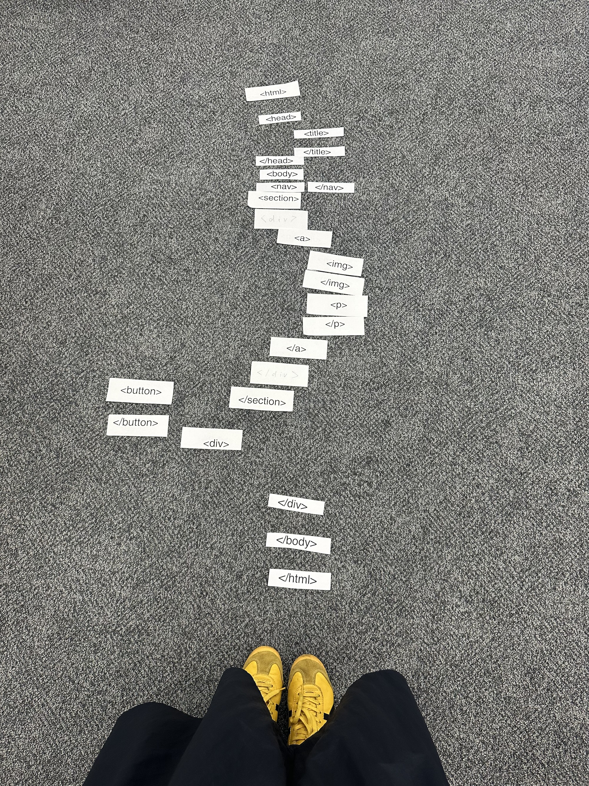
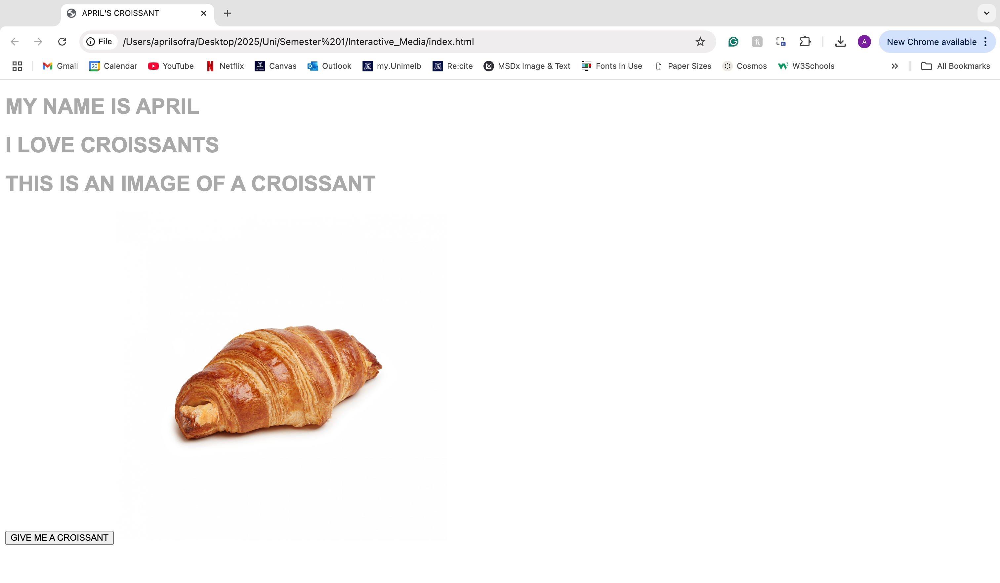

In this week's studio class, we engaged in an activity known as TAG! HTML Relay. This involved (what a surprise) a game of tag whereby each member within a group would have to collect a different HTML tag or command in order to continually add to the lines of code. In my group, we chose to attempt to recreate the HTML code for YouTube. This involved the quest for div and, img, and a tags so as to recreate the thumbnails. The final objective was to successfully create a functioning set of code. As you can tell from the image above, we were not as successful as we'd hoped to be.
HOMEWORK

This week's homework task involved a continuation of our introduction to HTML and the templates we developed in class. What initially began as a simple line of text containing the phrase "HELLO WORLD", became a subtle homage to croissants. During this time, I learnt how to format text, embed an image from my files, and add a button capsule.
 This is Refik Anadol.
This is Refik Anadol.